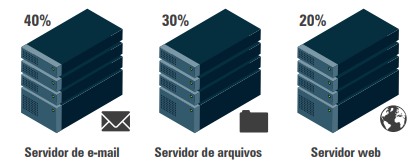
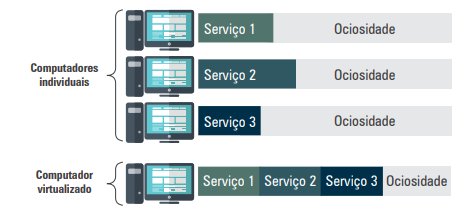
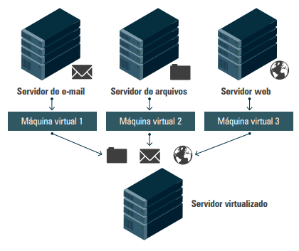
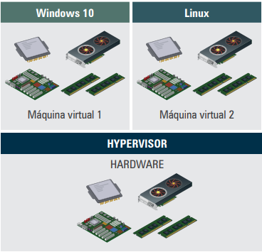

A virtualização permite que diversos servidores lógicos (máquinas virtuais) sejam executados em um único servidor físico por meio de softwares específicos. Isso reduz a ociosidade do hardware, melhora o uso dos recursos e diminui custos de infraestrutura.

Ao consolidar serviços de diferentes servidores físicos em um só, o tempo de ociosidade é reduzido. Com isso, a economia de hardware, energia e espaço físico se torna evidente.

As máquinas virtuais (VMs) surgem como camadas de abstração entre o hardware e o software, isolando os sistemas operacionais dos recursos físicos. O hypervisor ou Virtual Machine Monitor (VMM) é o software responsável por criar, gerenciar e distribuir os recursos entre as VMs.
O servidor físico é chamado de host, e cada máquina virtual que é criada é chamada de guest. O sistema operacional guest interage como se estivesse em uma máquina física, mas suas operações, como gravação em disco, são feitas em arquivos gerenciados pelo host.

1.1 Softwares de virtualização
Microsoft Hyper-V
VMware Workstation, Player e vSphere
RedHat KVM
Oracle VirtualBox
1.2 Tipos de virtualização
Virtualização de servidores: concentra diversos servidores em poucos equipamentos físicos, otimizando recursos e reduzindo custos.
Virtualização de desktop: permite a execução de diferentes sistemas operacionais em um único computador para testes e desenvolvimento.
Virtualização de sistemas operacionais: executa múltiplos sistemas operacionais sobre o mesmo kernel, reduzindo custos com licenças e aumentando a segurança.
Virtualização de funções de rede: distribui serviços como DHCP, DNS e arquivos, reduzindo a dependência de hardware e infraestrutura física.
Virtualização de dados: consolida dados dispersos em um só ponto de acesso, oferecendo segurança, consistência e economia.
Virtualização de storage: centraliza o armazenamento, permitindo o acesso remoto como se fosse local, ideal para data centers.
2. Virtualização – componentes
A virtualização depende de um servidor físico com recursos como CPU, memória e armazenamento suficientes. Instala-se um sistema operacional com suporte a hypervisor para criação das VMs. O hypervisor cria, aloca e gerencia os recursos entre as máquinas virtuais.

As máquinas virtuais podem usar mais recursos do que o disponível fisicamente, uma técnica chamada over provisioning. Em caso de disputa, o hypervisor prioriza as VMs conforme a configuração.
3. Motivos para a virtualização
Disponibilidade e confiabilidade: menor interrupção dos serviços e maior robustez do sistema.
Redução de custos: menos hardware físico significa economia com aquisição, manutenção e energia elétrica.
Automatização de processos: ferramentas de virtualização permitem criar modelos de VMs facilmente replicáveis.
Recuperação de desastres: mais ágil e eficiente, com backups de imagens completas de VMs.
Sustentabilidade (TI verde): menor consumo de energia e redução de descarte de equipamentos.
Provisionamento rápido: novos serviços e aplicações podem ser ativados rapidamente.
Migração para computação em nuvem: facilita a transição para a nuvem com suporte à infraestrutura como serviço (IaaS).
Benefícios imediatos
Aproveitamento da infraestrutura existente: reaproveitamento de servidores e equipamentos já instalados, sem necessidade de novas aquisições imediatas.
Diminuição do parque de máquinas: redução no número de servidores físicos, diminuindo espaço ocupado e custo operacional.
Centralização do gerenciamento: controle unificado dos recursos e servidores por meio de um único painel de administração.
Implementação rápida de aplicações: novos serviços podem ser criados e configurados com agilidade e praticidade.
Variedade de plataformas: suporte a diferentes sistemas operacionais e ambientes, de forma simultânea e isolada.
Criação de ambiente de testes: permite simular ambientes de produção para testar aplicações antes da implementação real.
Segurança e confiabilidade: isolamento entre sistemas e facilidade para realização de backups e restaurações.
Migração e atualização mais fácil: facilidade na transferência de sistemas entre servidores e atualização controlada de versões.
Veja o seguinte vídeo para melhor entendimento: link
4. Considerações finais
Este capítulo apresentou os principais conceitos de virtualização, incluindo os tipos, componentes e benefícios. A virtualização melhora o aproveitamento de recursos, permite a criação de ambientes flexíveis e seguros, reduz custos e prepara o ambiente para a adoção da computação em nuvem. Entender a virtualização é fundamental para administradores de TI que buscam eficiência, escalabilidade e modernização da infraestrutura tecnológica.